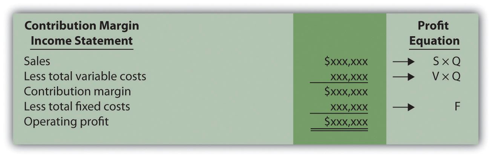
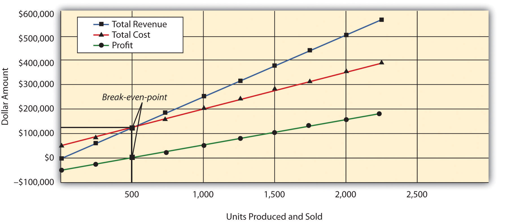
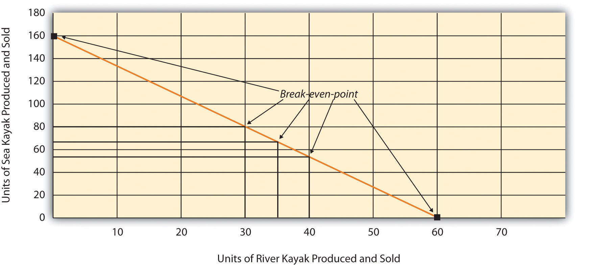
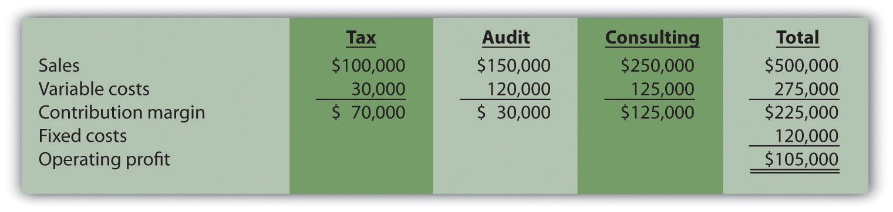
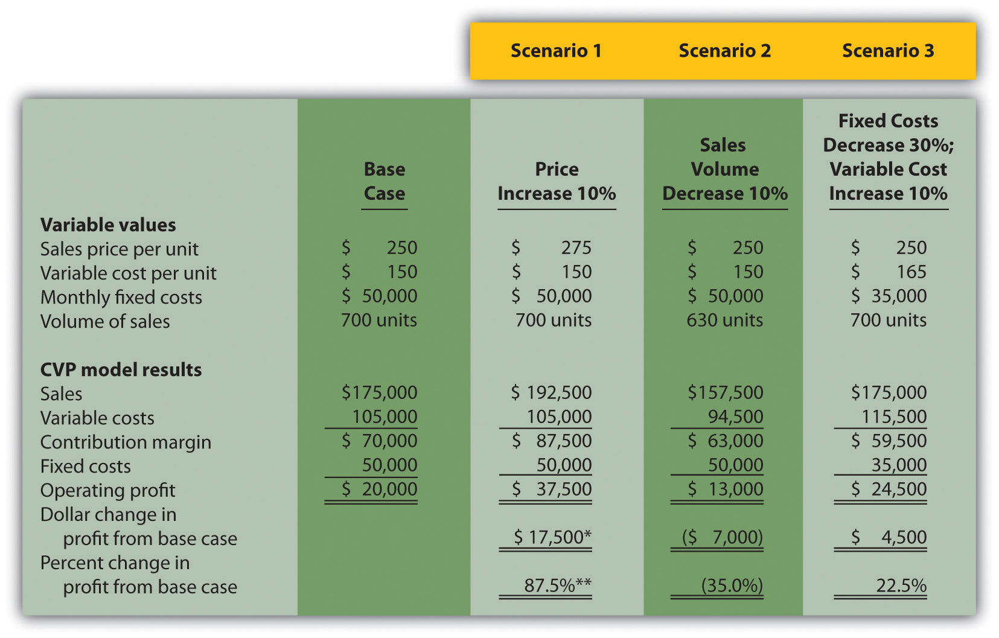
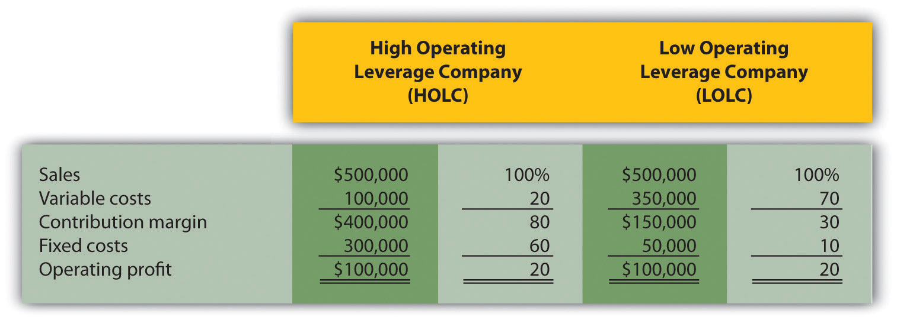
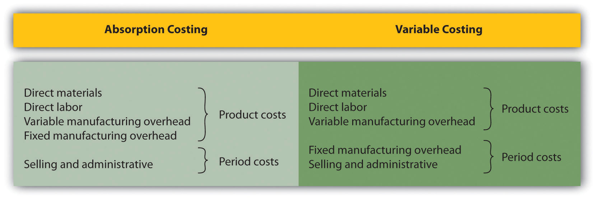
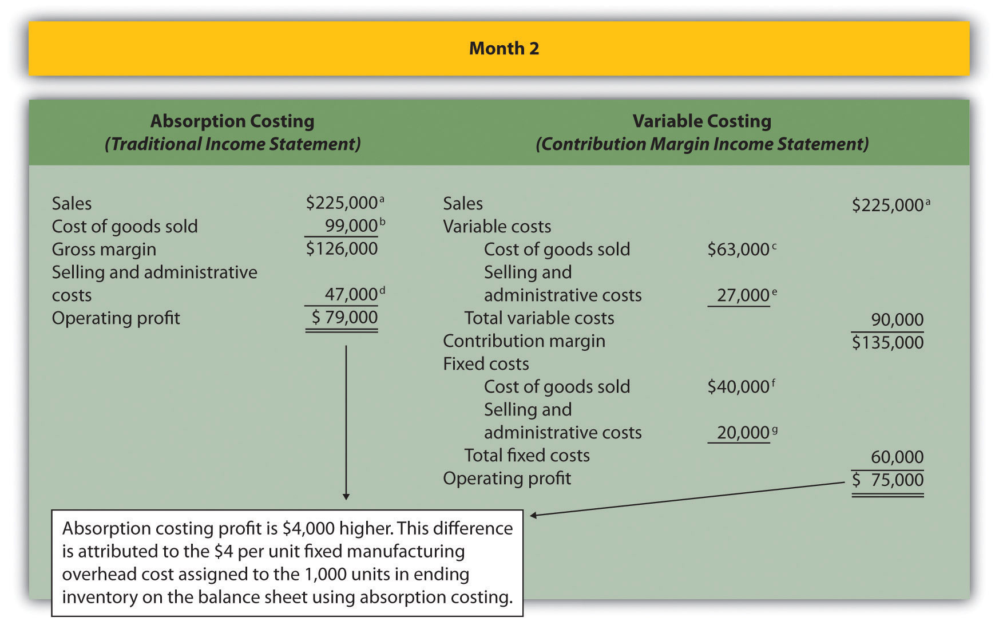
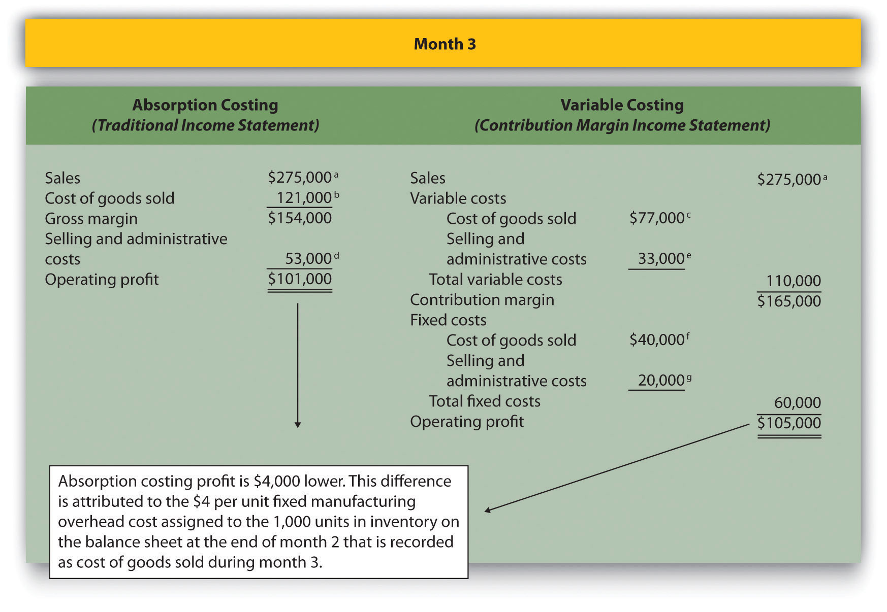

Recilia Vera is vice president of sales at Snowboard Company, a manufacturer of one model of snowboard. Lisa Donley is the company accountant. Recilia and Lisa are in their weekly meeting.
| Recilia: | Lisa, I’m in the process of setting up an incentive system for my sales staff, and I’d like to get a better handle on our financial information. |
| Lisa: | No problem. How can I help? |
| Recilia: | I’ve reviewed our financial results for the past 12 months. It looks like we made a profit in some months, and had losses in other months. From what I can tell, we sell each snowboard for $250, our variable cost is $150 per unit, and our fixed cost is $75 per unit. It seems to me that if we sell just one snowboard each month, we should still show a profit of $25, and any additional units sold should increase total profit. |
| Lisa: | Your unit sales price of $250 and unit variable cost of $150 look accurate to me, but I’m not sure about your unit fixed cost of $75. Fixed costs total $50,000 a month regardless of the number of units we produce. Trying to express fixed costs on a per unit basis can be misleading because it depends on the number of units being produced and sold, which changes each month. I can tell you that each snowboard produced and sold provides $100 toward covering fixed costs—that is, $250, the sales price of one snowboard, minus $150 in variable cost. |
| Recilia: | The $75 per unit for fixed costs was my estimate based on last year’s sales, but I get your point. As you know, I’d like to avoid having losses. Is it possible to determine how many units we have to sell each month to at least cover our expenses? I’d also like to discuss what it will take to make a decent profit. |
| Lisa: | We can certainly calculate how many units have to be sold to cover expenses, and I’d be glad to discuss how many units must be sold to make a decent profit. |
| Recilia: | Excellent! Let’s meet again next week to go through this in detail. |
Answering questions regarding break-even and target profit points requires an understanding of the relationship among costs, volume, and profit (often called CVP). This chapter discusses cost-volume-profit analysisThe process of analyzing how changes in key assumptions (e.g., assumptions related to cost, volume, or profit) may impact financial projections., which identifies how changes in key assumptions (for example, assumptions related to cost, volume, or profit) may impact financial projections. We address Recilia’s questions in the next section.
Question: The profit equationProfit equals total revenues minus total variable costs minus total fixed costs. shows that profit equals total revenues minus total variable costs and total fixed costs. This profit equation is used extensively in cost-volume-profit (CVP) analysis, and the information in the profit equation is typically presented in the form of a contribution margin income statement (first introduced in Chapter 5 "How Do Organizations Identify Cost Behavior Patterns?"). What is the relationship between the profit equation and the contribution margin income statement?
Answer: Recall that the contribution margin income statement starts with sales, deducts variable costs to determine the contribution margin, and deducts fixed costs to arrive at profit. We use the term “variable cost” because it describes a cost that varies in total with changes in volume of activity. We use the term “fixed cost” because it describes a cost that is fixed (does not change) in total with changes in volume of activity.
To allow for a mathematical approach to performing CVP analysis, the contribution margin income statement is converted to an equation using the following variables:
Thus
Figure 6.1 "Comparison of Contribution Margin Income Statement with Profit Equation" clarifies the link between the contribution margin income statement presented in Chapter 5 "How Do Organizations Identify Cost Behavior Patterns?" and the profit equation stated previously. Study this figure carefully because you will encounter these concepts throughout the chapter.
Figure 6.1 Comparison of Contribution Margin Income Statement with Profit Equation
Recall that when identifying cost behavior patterns, we assume that management is using the cost information to make short-term decisions. Variable and fixed cost concepts are useful for short-term decision making. The short-term period varies, depending on a company’s current production capacity and the time required to change capacity. In the long term, all cost behavior patterns are likely to change.
Question: Companies such as Snowboard Company often want to know the sales required to break even, which is called the break-even point. What is meant by the term break-even point?
Answer: The break-even point can be described either in units or in sales dollars. The break-even point in unitsThe number of units that must be sold to achieve zero profit. is the number of units that must be sold to achieve zero profit. The break-even point in sales dollarsThe total sales measured in dollars required to achieve zero profit. is the total sales measured in dollars required to achieve zero profit. If a company sells products or services easily measured in units (e.g., cars, computers, or mountain bikes), then the formula for break-even point in units is used. If a company sells products or services not easily measured in units (e.g., restaurants, law firms, or electricians), then the formula for break-even point in sales dollars is used.
Question: How is the break-even point in units calculated, and what is the break-even point for Snowboard Company?
Answer: The break-even point in units is found by setting profit to zero using the profit equation. Once profit is set to zero, fill in the appropriate information for selling price per unit (S), variable cost per unit (V), and total fixed costs (F), and solve for the quantity of units produced and sold (Q).
Let’s calculate the break-even point in units for Snowboard Company. Recall that each snowboard sells for $250. Unit variable costs total $150, and total monthly fixed costs are $50,000. To find the break-even point in units for Snowboard Company, set the profit to zero, insert the unit sales price (S), insert the unit variable cost (V), insert the total fixed costs (F), and solve for the quantity of units produced and sold (Q):
Thus Snowboard Company must produce and sell 500 snowboards to break even. This answer is confirmed in the following contribution margin income statement.
Question: Although it is helpful for companies to know the break-even point, most organizations are more interested in determining the sales required to make a targeted amount of profit. How does finding the target profit in units help companies like Snowboard Company?
Answer: Finding a target profit in unitsThe number of units that must be sold to achieve a certain profit. simply means that a company would like to know how many units of product must be sold to achieve a certain profit. At Snowboard Company, Recilia (the vice president of sales) and Lisa (the accountant) are in their next weekly meeting.
| Lisa: | Recilia, last week you asked how many units we have to sell to cover our expenses. This is called the break-even point. If each unit produced and sold provides $100 toward covering fixed costs, and if total monthly fixed costs are $50,000, we would have to sell 500 units to break even—that is, $50,000 divided by $100. |
| Recilia: | What happens once we sell enough units to cover all of our fixed costs for the month? |
| Lisa: | Good question! Once all fixed costs are covered for the month, each unit sold contributes $100 toward profit. |
| Recilia: | I think I’m getting the hang of this. It will take 500 units in sales to break even, and each unit sold above 500 results in a $100 increase in profit. So if we sell 503 units for a month, profit will total $300? |
| Lisa: | You’ve got it! |
| Recilia: | So if our goal is to make a profit of $30,000 per month (target profit), how many units must be sold? |
| Lisa: | It takes 500 units to break even. We also know each unit sold above and beyond 500 units contributes $100 toward profit. Thus we would have to sell an additional 300 units above the break-even point to earn a profit of $30,000. This means we would have to sell 800 units in total to make $30,000 in profit. |
| Recilia: | Wow, I’m not sure selling 800 units is realistic, but at least we have a better sense of what needs to be done to make a decent profit. Thanks for your help! |
Question: Let’s formalize this discussion by using the profit equation. How is the profit equation used to find a target profit amount in units?
Answer: Finding the target profit in units is similar to finding the break-even point in units except that profit is no longer set to zero. Instead, set the profit to the target profit the company would like to achieve. Then fill in the information for selling price per unit (S), variable cost per unit (V), and total fixed costs (F), and solve for the quantity of units produced and sold (Q):
Thus Snowboard Company must produce and sell 800 snowboards to achieve $30,000 in profit. This answer is confirmed in the following contribution margin income statement:
Question: Although using the profit equation to solve for the break-even point or target profit in units tends to be the easiest approach, we can also use a shortcut formula derived from this equation. What is the shortcut formula, and how is it used to find the target profit in units for Snowboard Company?
Answer: The shortcut formula is as follows:
If you want to find the break-even point in units, set “Target Profit” in the equation to zero. If you want to find a target profit in units, set “Target Profit” in the equation to the appropriate amount. To confirm that this works, use the formula for Snowboard Company by finding the number of units produced and sold to achieve a target profit of $30,000:
The result is the same as when we used the profit equation.
Question: Finding the break-even point in units works well for companies that have products easily measured in units, such as snowboard or bike manufacturers, but not so well for companies that have a variety of products not easily measured in units, such as law firms and restaurants. How do companies find the break-even point if they cannot easily measure sales in units?
Answer: For these types of companies, the break-even point is measured in sales dollars. That is, we determine the total revenue (total sales dollars) required to achieve zero profit for companies that cannot easily measure sales in units.
Finding the break-even point in sales dollars requires the introduction of two new terms: contribution margin per unit and contribution margin ratio.
The contribution margin per unitThe amount each unit sold contributes to (1) covering fixed costs and (2) increasing profit. is the amount each unit sold contributes to (1) covering fixed costs and (2) increasing profit. We calculate it by subtracting variable costs per unit (V) from the selling price per unit (S).
For Snowboard Company the contribution margin is $100:
Thus each unit sold contributes $100 to covering fixed costs and increasing profit.
The contribution margin ratioThe contribution margin as a percentage of sales; it measures the amount each sales dollar contributes to (1) covering fixed costs and (2) increasing profit; also called contribution margin percent. (often called contribution margin percent) is the contribution margin as a percentage of sales. It measures the amount each sales dollar contributes to (1) covering fixed costs and (2) increasing profit. The contribution margin ratio is the contribution margin per unit divided by the selling price per unit. (Note that the contribution margin ratio can also be calculated using the total contribution margin and total sales; the result is the same.)
For Snowboard Company the contribution margin ratio is 40 percent:
Thus each dollar in sales contributes 40 cents ($0.40) to covering fixed costs and increasing profit.
Question: With an understanding of the contribution margin and contribution margin ratio, we can now calculate the break-even point in sales dollars. How do we calculate the break-even point in sales dollars for Snowboard Company?
Answer: The formula to find the break-even point in sales dollars is as follows.
For Snowboard Company the break-even point in sales dollars is $125,000 per month:
Thus Snowboard Company must achieve $125,000 in total sales to break even. The following contribution margin income statement confirms this answer:
Question: Finding a target profit in sales dollarsThe total sales measured in dollars required to achieve a certain profit. simply means that a company would like to know total sales measured in dollars required to achieve a certain profit. Finding the target profit in sales dollars is similar to finding the break-even point in sales dollars except that “target profit” is no longer set to zero. Instead, target profit is set to the profit the company would like to achieve. Recall that management of Snowboard Company asked the following question: What is the amount of total sales dollars required to earn a target profit of $30,000?
Answer: Use the break-even formula described in the previous section. Instead of setting the target profit to $0, set it to $30,000. This results in an answer of $200,000 in monthly sales:
Thus Snowboard Company must achieve $200,000 in sales to make $30,000 in monthly profit. The following contribution margin income statement confirms this answer:
Measuring the Break-Even Point for Airlines
During the month of September 2001, United Airlines was losing $15 million per day. With $2.7 billion in cash, United had six months to return to profitability before facing a significant cash shortage. Many analysts believed United’s troubles resulted in part from a relatively high break-even point.
Airlines measure break-even points, also called load factors, in terms of the percentage of seats filled. At the end of 2001, one firm estimated that United had to fill 96 percent of its seats just to break even. This is well above the figure for other major airlines, as you can see in the list that follows:
United Airlines filed for bankruptcy at the end of 2002 and emerged from bankruptcy in 2006 after reducing costs by $7 billion a year. Other airlines continue to work on reducing their break-even points and maximizing the percentage of seats filled.
Source: Lisa DiCarlo, “Can This Airline Be Saved?” Forbes magazine’s Web site (http://www.forbes.com), November 2001; “United Airlines Emerges from Bankruptcy,” Reuters (http://www.foxnews.com), February 1, 2005.
Question: The relationship of costs, volume, and profit can be displayed in the form of a graph. What does this graph look like for Snowboard Company, and how does it help management evaluate financial information related to the production of snowboards?
Answer: Figure 6.2 "CVP Graph for Snowboard Company" shows in graph form the relationship between cost, volume, and profit for Snowboard Company. The vertical axis represents dollar amounts for revenues, costs, and profits. The horizontal axis represents the volume of activity for a period, measured as units produced and sold for Snowboard.
There are three lines in the graph:
The total revenue line shows total revenue based on the number of units produced and sold. For example, if Snowboard produces and sells one unit, total revenue is $250 (= 1 × $250). If it produces and sells 2,000 units, total revenue is $500,000 (= 2,000 × $250).
The total cost line shows total cost based on the number of units produced and sold. For example, if Snowboard produces and sells one unit, total cost is $50,150 [= $50,000 + (1 × $150)]. If it produces and sells 2,000 units, total cost is $350,000 [= $50,000 + (2,000 × $150)].
The profit line shows profit or loss based on the number of units produced and sold. It is simply the difference between the total revenue and total cost lines. For example, if Snowboard produces and sells 2,000 units, the profit is $150,000 (= $500,000 − $350,000). If no units are sold, a loss is incurred equal to total fixed costs of $50,000.
Figure 6.2 CVP Graph for Snowboard Company
Question: Managers often like to know how close projected sales are to the break-even point. How is this information calculated and used by management?
Answer: The excess of projected sales over the break-even point is called the margin of safetyThe excess of expected sales over the break-even point, measured in units and in sales dollars.. The margin of safety represents the amount by which sales can fall before the company incurs a loss.
Assume Snowboard Company expects to sell 700 snowboards and that its break-even point is 500 units; the margin of safety is 200 units. The calculation is
Thus sales can drop by 200 units per month before the company begins to incur a loss.
The margin of safety can also be stated in sales dollars.
For Snowboard the margin of safety in sales dollars is $50,000:
Thus sales revenue can drop by $50,000 per month before the company begins to incur a loss.
Cost-volume-profit analysis involves finding the break-even and target profit point in units and in sales dollars. The key formulas for an organization with a single product are summarized in the following list. Set the target profit to $0 for break-even calculations, or to the appropriate profit dollar amount for target profit calculations. The margin of safety formula is also shown:
Break-even or target profit point measured in units:
(The denominator is also called “contribution margin per unit.”)
Break-even or target profit point measured in sales dollars:
Margin of safety in units or sales dollars:
Projected sales − Break-even salesStar Symphony would like to perform for a neighboring city. Fixed costs for the performance total $5,000. Tickets will sell for $15 per person, and an outside organization responsible for processing ticket orders charges the symphony a fee of $2 per ticket. Star Symphony expects to sell 500 tickets.
Solution to Review Problem 6.1
Note: All solutions are rounded.
The symphony must sell 385 tickets to break even:
The symphony must sell 923 tickets to make a profit of $7,000:
The symphony must make $5,769 in sales to break even:
The symphony must make $13,846 in sales to earn a profit of $7,000:
The symphony’s margin of safety is 115 units or $1,725 in sales:
Question: Although the previous section illustrated cost-volume-profit (CVP) analysis for companies with a single product easily measured in units, most companies have more than one product or perhaps offer services not easily measured in units. Suppose you are the manager of a company called Kayaks-For-Fun that produces two kayak models, River and Sea. What information is needed to calculate the break-even point for this company?
Answer: The following information is required to find the break-even point:
Question: Given the information provided for Kayaks-For-Fun, how will the company calculate the break-even point?
Answer: First, we must expand the profit equation presented earlier to include multiple products. The following terms are used once again. However, subscript r identifies the River model, and subscript s identifies the Sea model (e.g., Sr stands for the River model’s selling price per unit). CM is new to this section and represents the contribution margin.
Thus
Without going through a detailed derivation, this equation can be restated in a simplified manner for Kayaks-For-Fun, as follows:
One manager at Kayaks-For-Fun believes the break-even point should be 60 units in total, and another manager believes the break-even point should be 160 units in total. Which manager is correct? The answer is both might be correct. If only the River kayak is produced and sold, 60 units is the break-even point. If only the Sea kayak is produced and sold, 160 units is the break-even point. There actually are many different break-even points, because the profit equation has two unknown variables, Qr and Qs.
Further evidence of multiple break-even points is provided as follows (allow for rounding to the nearest unit), and shown graphically in Figure 6.3 "Multiple Break-Even Points for Kayaks-For-Fun":
Profit ($0) = ($400 × 30 units of River) + ($150 × 80 units of Sea) − $24,000 Profit ($0) = ($400 × 35 units of River) + ($150 × 67 units of Sea) − $24,000 Profit ($0) = ($400 × 40 units of River) + ($150 × 53 units of Sea) − $24,000Figure 6.3 Multiple Break-Even Points for Kayaks-For-Fun
Question: Because most companies sell multiple products that have different selling prices and different variable costs, the break-even or target profit point depends on the sales mix. What is the sales mix, and how is it used to calculate the break-even point?
Answer: The sales mixThe proportion of one product’s sales to total sales. is the proportion of one product’s sales to total sales. In the case of Kayaks-For-Fun, the River model accounts for 60 percent of total unit sales and the Sea model accounts for 40 percent of total unit sales.
In calculating the break-even point for Kayaks-For-Fun, we must assume the sales mix for the River and Sea models will remain at 60 percent and 40 percent, respectively, at all different sales levels. The formula used to solve for the break-even point in units for multiple-product companies is similar to the one used for a single-product company, with one change. Instead of using the contribution margin per unit in the denominator, multiple-product companies use a weighted average contribution margin per unit. The formula to find the break-even point in units is as follows.
When a company assumes a constant sales mix, a weighted average contribution margin per unitCalculated by multiplying each product’s unit contribution margin by the product’s proportion of total sales. can be calculated by multiplying each product’s unit contribution margin by its proportion of total sales. The resulting weighted unit contribution margins for all products are then added together.
At Kayaks-For-Fun, the weighted average contribution margin per unit of $300 is
$300 = ($400 × 60 percent) + ($150 × 40 percent)We can now determine the break-even point in units by using the following formula:
Kayaks-For-Fun must sell 48 River models (= 60 percent × 80 units) and 32 Sea models (= 40 percent × 80 units) to break even. Again, this assumes the sales mix remains the same at different levels of sales volume.
Question: We now know how to calculate the break-even point in units for a company with multiple products. How do we extend this process to find the target profit in units for a company with multiple products?
Answer: Finding the target profit in units for a company with multiple products is similar to finding the break-even point in units except that profit is no longer set to zero. Instead, profit is set to the target profit the company would like to achieve.
For example, assume Kayaks-For-Fun would like to know how many units it must sell to make a monthly profit of $96,000. Simply set the target profit to $96,000 and run the calculation:
Kayaks-For-Fun must sell 240 River models (= 60 percent × 400) and 160 Sea models (= 40 percent × 400) to make a profit of $96,000.
International Printer Machines (IPM) builds three computer printer models: Inkjet, Laser, and Color Laser. Information for these three products is as follows:
| Inkjet | Laser | Color Laser | Total | |
| Selling price per unit | $250 | $400 | $1,600 | |
| Variable cost per unit | $100 | $150 | $ 800 | |
| Expected unit sales (annual) | 12,000 | 6,000 | 2,000 | 20,000 |
| Sales mix | 60 percent | 30 percent | 10 percent | 100 percent |
Total annual fixed costs are $5,000,000. Assume the sales mix remains the same at all levels of sales.
Solution to Review Problem 6.2
Note: All solutions are rounded.
IPM must sell 20,408 printers to break even:
As calculated previously, 20,408 printers must be sold to break even. Using the sales mix provided, the following number of units of each printer must be sold to break even:
IPM must sell 24,490 printers to earn $1,000,000 in profit:
As calculated previously, 24,490 printers must be sold to earn $1,000,000 in profit. Using the sales mix provided, the following number of units for each printer must be sold to earn $1,000,000 in profit:
A restaurant like Applebee’s, which serves chicken, steak, seafood, appetizers, and beverages, would find it difficult to measure a “unit” of product. Such companies need a different approach to finding the break-even point. Figure 6.4 "Type of Good or Service Determines Whether to Calculate Break-Even Point and Target Profit Points in Units or Sales Dollars" illustrates this point by contrasting a company that has similar products easily measured in units (kayaks) with a company that has unique products (meals at a restaurant) not easily measured in units.
Question: For companies that have unique products not easily measured in units, how do we find the break-even point?
Answer: Rather than measuring the break-even point in units, a more practical approach for these types of companies is to find the break-even point in sales dollars. We can use the formula that follows to find the break-even point in sales dollars for organizations with multiple products or services. Note that this formula is similar to the one used to find the break-even point in sales dollars for an organization with one product, except that the contribution margin ratio now becomes the weighted average contribution margin ratio.
For example, suppose Amy’s Accounting Service has three departments—tax, audit, and consulting—that provide services to the company’s clients. Figure 6.5 "Income Statement for Amy’s Accounting Service" shows the company’s income statement for the year. Amy, the owner, would like to know what sales are required to break even. Note that fixed costs are known in total, but Amy does not allocate fixed costs to each department.
Figure 6.5 Income Statement for Amy’s Accounting Service
The contribution margin ratio differs for each department:
| Tax | 70 percent (= $70,000 ÷ $100,000) |
| Audit | 20 percent (= $30,000 ÷ $150,000) |
| Consulting | 50 percent (= $125,000 ÷ $250,000) |
Question: We have the contribution margin ratio for each department, but we need it for the company as a whole. How do we find the contribution margin ratio for all of the departments in the company combined?
Answer: The contribution margin ratio for the company as a whole is the weighted average contribution margin ratioThe total contribution margin divided by total sales.. We calculate it by dividing the total contribution margin by total sales. For Amy’s Accounting Service, the weighted average contribution margin ratio is 45 percent (= $225,000 ÷ $500,000). For every dollar increase in sales, the company will generate an additional 45 cents ($0.45) in profit. This assumes that the sales mix remains the same at all levels of sales. (The sales mix here is measured in sales dollars for each department as a proportion of total sales dollars.)
Now that you know the weighted average contribution margin ratio for Amy’s Accounting Service, it is possible to calculate the break-even point in sales dollars:
Amy’s Accounting Service must achieve $266,667 in sales to break even.The weighted average contribution margin ratio can also be found by multiplying each department’s contribution margin ratio by its proportion of total sales. The resulting weighted average contribution margin ratios for all departments are then added. The calculation for Amy’s Accounting Service is as follows:45 percent weighted average contribution margin ratio = (tax has 20 percent of total sales × 70 percent contribution margin ratio) + (audit has 30 percent of total sales × 20 percent contribution margin ratio) + (consulting has 50 percent of total sales × 50 percent contribution margin ratio)Thus 45 percent = 14 percent + 6 percent + 25 percent.
Question: How do we find the target profit in sales dollars for companies with products not easily measured in units?
Answer: Finding the target profit in sales dollars for a company with multiple products or services is similar to finding the break-even point in sales dollars except that profit is no longer set to zero. Instead, profit is set to the target profit the company would like to achieve.
For example, assume Amy’s Accounting Service would like to know sales dollars required to make $250,000 in annual profit. Simply set the target profit to $250,000 and run the calculation:
Amy’s Accounting Service must achieve $822,222 in sales to earn $250,000 in profit.
Question: Several assumptions are required to perform break-even and target profit calculations for companies with multiple products or services. What are these important assumptions?
Answer: These assumptions are as follows:
These assumptions simplify the CVP model and enable accountants to perform CVP analysis quickly and easily. However, these assumptions may not be realistic, particularly if significant changes are made to the organization’s operations. When performing CVP analysis, it is important to consider the accuracy of these simplifying assumptions. It is always possible to design a more accurate and complex CVP model. But the benefits of obtaining more accurate data from a complex CVP model must outweigh the costs of developing such a model.
Question: Managers often like to know how close expected sales are to the break-even point. As defined earlier, the excess of projected sales over the break-even point is called the margin of safety. How is the margin of safety calculated for multiple-product and service organizations?
Answer: Let’s return to Amy’s Accounting Service and assume that Amy expects annual sales of $822,222, which results in expected profit of $250,000. Given a break-even point of $266,667, the margin of safety in sales dollars is calculated as follows:
Thus sales revenue can drop by $555,555 per year before the company begins to incur a loss.
The key formula used to calculate the break-even or target profit point in units for a company with multiple products is as follows. Simply set the target profit to $0 for break-even calculations, or to the appropriate profit dollar amount for target profit calculations.
The formula used to find the break-even point or target profit in sales dollars for companies with multiple products or service is as follows. Simply set the “Target Profit” to $0 for break-even calculations, or to the appropriate profit dollar amount for target profit calculations:
Ott Landscape Incorporated provides landscape maintenance services for three types of clients: commercial, residential, and sports fields. Financial projections for this coming year for the three segments are as follows:
Assume the sales mix remains the same at all levels of sales.
Solution to Review Problem 6.3
Sales of $1,000,000 are required to break even:
*Weighted average contribution margin ratio = $1,000,000 ÷ $5,000,000 = 20 percent or 0.20.
Sales of $8,500,000 are required to make a profit of $1,500,000:
The margin of safety is $4,000,000 in sales:
Question: We can use the cost-volume-profit (CVP) financial model described in this chapter for single-product, multiple-product, and service organizations to perform sensitivity analysis, also called what-if analysis. How is sensitivity analysis used to help managers make decisions?
Answer: Sensitivity analysisAn analysis that shows how the CVP model will change with changes in any of its variables. shows how the CVP model will change with changes in any of its variables (e.g., changes in fixed costs, variable costs, sales price, or sales mix). The focus is typically on how changes in variables will alter profit.
To illustrate sensitivity analysis, let’s go back to Snowboard Company, a company that produces one snowboard model. The assumptions for Snowboard were as follows:
| Sales price per unit | $ 250 |
| Variable cost per unit | 150 |
| Fixed costs per month | 50,000 |
| Target profit | 30,000 |
Recall from earlier calculations that the break-even point is 500 units, and Snowboard must sell 800 units to achieve a target profit of $30,000. Management believes a goal of 800 units is overly optimistic and settles on a best guess of 700 units in monthly sales. This is called the “base case.” The base case is summarized as follows in contribution margin income statement format:
Question: Although management believes the base case is reasonably accurate, it is concerned about what will happen if certain variables change. As a result, you are asked to address the following questions from management (you are now performing sensitivity analysis!). Each scenario is independent of the others. Unless told otherwise, assume that the variables used in the base case remain the same. How do you answer the following questions for management?
Answer: The CVP model shown in Figure 6.6 "Sensitivity Analysis for Snowboard Company" answers these questions. Each column represents a different scenario, with the first column showing the base case and the remaining columns providing answers to the three questions posed by management. The top part of Figure 6.6 "Sensitivity Analysis for Snowboard Company" shows the value of each variable based on the scenarios presented previously, and the bottom part presents the results in contribution margin income statement format.
Figure 6.6 Sensitivity Analysis for Snowboard Company
a $17,500 = $37,500 − $20,000.
b 87.5 percent = $17,500 ÷ $20,000.
Carefully review Figure 6.6 "Sensitivity Analysis for Snowboard Company". The column labeled Scenario 1 shows that increasing the price by 10 percent will increase profit 87.5 percent ($17,500). Thus profit is highly sensitive to changes in sales price. Another way to look at this is that for every one percent increase in sales price, profit will increase by 8.75 percent, or for every one percent decrease in sales price, profit will decrease by 8.75 percent.
The column labeled Scenario 2 shows that decreasing sales volume 10 percent will decrease profit 35 percent ($7,000). Thus profit is also highly sensitive to changes in sales volume. Stated another way, every one percent decrease in sales volume will decrease profit by 3.5 percent; or every one percent increase in sales volume will increase profit by 3.5 percent.
When comparing Scenario 1 with Scenario 2, we see that Snowboard Company’s profit is more sensitive to changes in sales price than to changes in sales volume, although changes in either will significantly affect profit.
The column labeled Scenario 3 shows that decreasing fixed costs by 30 percent and increasing variable cost by 10 percent will increase profit 22.5 percent ($4,500). (Perhaps Snowboard Company is considering moving toward less automation and more direct labor!)
Using Excel to Perform Sensitivity Analysis
The accountants at Snowboard Company would likely use a spreadsheet program, such as Excel, to develop a CVP model for the sensitivity analysis shown in Figure 6.6 "Sensitivity Analysis for Snowboard Company". An example of how to use Excel to prepare the CVP model shown in Figure 6.6 "Sensitivity Analysis for Snowboard Company" is presented as follows. Notice that the basic data are entered at the top of the spreadsheet (data entry section), and the rest of the information is driven by formulas. This allows for quick sensitivity analysis of different scenarios.
Using the base case as an example, sales of $175,000 (cell D14) are calculated by multiplying the $250 sales price per unit (cell D5) by 700 units (cell D8). Variable costs of $105,000 (cell D15) are calculated by multiplying the $150 variable cost per unit (cell D6) by 700 units (cell D8). Fixed costs of $50,000 come from the top section (cell D7). The contribution margin of $70,000 is calculated by subtracting variable costs from sales, and profit of $20,000 is calculated by subtracting fixed costs from the contribution margin.
Question: Although the focus of sensitivity analysis is typically on how changes in variables will affect profit (as shown in Figure 6.6 "Sensitivity Analysis for Snowboard Company"), accountants also use sensitivity analysis to determine the impact of changes in variables on the break-even point and target profit. How is sensitivity analysis used to evaluate the impact changes in variables will have on break-even and target profit points?
Answer: Let’s look at an example for Snowboard Company. Assume the company is able to charge $275 per unit, instead of $250 per unit. How many units must Snowboard Company sell to break even? The following calculation is based on the shortcut formula presented earlier in the chapter:
Thus if the sales price per unit increases from $250 to $275, the break-even point decreases from 500 units (calculated earlier) to 400 units, which is a decrease of 100 units.
How would this same increase in sales price change the required number of units sold to achieve a profit of $30,000? We apply the same shortcut formula:
Thus if the sales price per unit increases from $250 to $275, the number of units sold to achieve a profit of $30,000 decreases from 800 units (calculated earlier) to 640 units, which is a decrease of 160 units.
Performing Sensitivity Analysis for a Brewpub
Three entrepreneurs in California were looking for investors and banks to finance a new brewpub. Brewpubs focus on two segments: food from the restaurant segment, and freshly brewed beer from the beer production segment. All parties involved in the process of raising money—potential investors and banks, as well as the three entrepreneurs (i.e., the owners)—wanted to know what the new business’s projected profits would be. After months of research, the owners created a financial model that provided this information. Projected profits were slightly more than $300,000 for the first year (from sales of $1.95 million) and were expected to increase in each of the next four years.
One of the owners asked, “What if our projected revenues are too high? What will happen to profits if sales are lower than we expect? After all, we will have debt of well over $1 million, and I don’t want anyone coming after my personal assets if the business doesn’t have the money to pay!” Although all three owners felt the financial model was reasonably accurate, they decided to find the break-even point and the resulting margin of safety.
Because a brewpub does not sell “units” of a specific product, the owners found the break-even point in sales dollars. The owners knew the contribution margin ratio and all fixed costs from the financial model. With this information, they were able to calculate the break-even point and margin of safety. The worried owner was relieved to discover that sales could drop over 35 percent from initial projections before the brewpub incurred an operating loss.
This problem is an extension of Note 6.28 "Review Problem 6.2". Recall that International Printer Machines (IPM) builds three computer printer models: Inkjet, Laser, and Color Laser. Base case information for these three products is as follows:
| Inkjet | Laser | Color Laser | Total | |
| Selling price per unit | $250 | $400 | $1,600 | |
| Variable cost per unit | $100 | $150 | $ 800 | |
| Expected unit sales (annual) | 12,000 | 6,000 | 2,000 | 20,000 |
| Sales mix | 60 percent | 30 percent | 10 percent | 100 percent |
Total annual fixed costs are $5,000,000. Assume that each scenario that follows is independent of the others. Unless stated otherwise, the variables are the same as in the base case.
Solution to Review Problem 6.4
Base Case:
Laser sales price increases 10 percent:
Total profit would increase $240,000 (from loss of $100,000 in base case to profit of $140,000 in this scenario).
Inkjet sales volume decreases 4,000 units:
Total profit would decrease $600,000 (from loss of $100,000 in base case to loss of $700,000 in this scenario).
Fixed costs decrease 20 percent:
Total profit would increase $1,000,000 (from loss of $100,000 in base case to profit of $900,000 in this scenario).
Question: Describing an organization’s cost structure helps us to understand the amount of fixed and variable costs within the organization. What is meant by the term cost structure?
Answer: Cost structureThe proportion of fixed and variable costs to total costs. is the term used to describe the proportion of fixed and variable costs to total costs. For example, if a company has $80,000 in fixed costs and $20,000 in variable costs, the cost structure is described as 80 percent fixed costs and 20 percent variable costs.
Question: Operating leverageThe level of fixed costs within an organization. refers to the level of fixed costs within an organization. How do we determine if a company has high operating leverage?
Answer: Companies with a relatively high proportion of fixed costs have high operating leverage. For example, companies that produce computer processors, such as NEC and Intel, tend to make large investments in production facilities and equipment and therefore have a cost structure with high fixed costs. Businesses that rely on direct labor and direct materials, such as auto repair shops, tend to have higher variable costs than fixed costs.
Operating leverage is an important concept because it affects how sensitive profits are to changes in sales volume. This is best illustrated by comparing two companies with identical sales and profits but with different cost structures, as we do in Figure 6.7 "Operating Leverage Example". High Operating Leverage Company (HOLC) has relatively high fixed costs, and Low Operating Leverage Company (LOLC) has relatively low fixed costs.
Figure 6.7 Operating Leverage Example
One way to observe the importance of operating leverage is to compare the break-even point in sales dollars for each company. HOLC needs sales of $375,000 to break even (= $300,000 ÷ 0.80), whereas LOLC needs sales of $166,667 to break even (= $50,000 ÷ 0.30).
Question: Why don’t all companies strive for low operating leverage to lower the break-even point?
Answer: In Figure 6.7 "Operating Leverage Example", LOLC looks better up to the sales point of $500,000 and profit of $100,000. However, once sales exceed $500,000, HOLC will have higher profit than LOLC. This is because every additional dollar in sales will provide $0.80 in profit for HOLC (80 percent contribution margin ratio), and only $0.30 in profit for LOLC (30 percent contribution margin ratio). If a company is relatively certain of increasing sales, then it makes sense to have higher operating leverage.
Financial advisers often say, “the higher the risk, the higher the potential profit,” which can also be stated as “the higher the risk, the higher the potential loss.” The same applies to operating leverage. Higher operating leverage can lead to higher profit. However, high operating leverage companies that encounter declining sales tend to feel the negative impact more than companies with low operating leverage.
To prove this point, let’s assume both companies in Figure 6.7 "Operating Leverage Example" experience a 30 percent decrease in sales. HOLC’s profit would decrease by $120,000 (= 30 percent × $400,000 contribution margin) and LOLC’s profit would decrease by $45,000 (= 30 percent × $150,000 contribution margin). HOLC would certainly feel the pain more than LOLC.
Now assume both companies in Figure 6.7 "Operating Leverage Example" experience a 30 percent increase in sales. HOLC’s profit would increase by $120,000 (= 30 percent × $400,000 contribution margin) and LOLC’s profit would increase by $45,000 (= 30 percent × $150,000 contribution margin). HOLC benefits more from increased sales than LOLC.
What are the characteristics of a company with high operating leverage, and how do these characteristics differ from those of a company with low operating leverage?
Solution to Review Problem 6.5
Companies with high operating leverage have a relatively high proportion of fixed costs to total costs, and their profits tend to be much more sensitive to changes in sales than their low operating leverage counterparts. Companies with low operating leverage have a relatively low proportion of fixed costs to total costs, and their profits tend to be much less sensitive to changes in sales than their high operating leverage counterparts.
Question: Many companies have limited resources in such areas as labor hours, machine hours, facilities, and materials. These constraints will likely affect a company’s ability to produce goods or provide services. When a company that produces multiple products faces a constraint, managers often calculate the contribution margin per unit of constraint in addition to the contribution margin per unit. The contribution margin per unit of constraintThe contribution margin per unit divided by the units of constrained resource required to produce one unit of product. is the contribution margin per unit divided by the units of constrained resource required to produce one unit of product. How is this measure used by managers to make decisions when faced with resource constraints?
Answer: Let’s examine the Kayaks-For-Fun example introduced earlier in the chapter. The company produces two kayak models, River and Sea. Based on the information shown, Kayaks-For-Fun would prefer to sell more of the River model because it has the highest contribution margin per unit.
Kayaks-For-Fun has a total of 320 labor hours available each month. The specialized skills required to build the kayaks makes it difficult for management to find additional workers. Assume the River model requires 4 labor hours per unit and the Sea model requires 1 labor hour per unit (most of the variable cost for the Sea model is related to expensive materials required for production). Kayaks-For-Fun sells everything it produces. Given its labor hours constraint, the company would prefer to maximize the contribution margin per labor hour.
Based on this information, Kayaks-For-Fun would prefer to sell the Sea model because it provides a contribution margin per labor hour of $150 versus $100 for the River model. The company would prefer only to make the Sea model, which would yield a total contribution margin of $48,000 (= $150 × 320 hours). If the River model were the only model produced, the total contribution margin to the company would be $32,000 (= $100 × 320 hours).
Analysis such as this often leads to further investigation. It may be that Kayaks-For-Fun can find additional labor to alleviate this resource constraint. Or perhaps the production process can be modified in a way that reduces the labor required to build the River model (e.g., through increased automation). Whatever the outcome, companies with limited resources are wise to calculate the contribution margin per unit of constrained resource.
This review problem is based on the information for Kayaks-For-Fun presented previously. Assume Kayaks-For-Fun found additional labor, thereby eliminating this resource constraint. However, the company now faces limited available machine hours. It has a total of 3,000 machine hours available each month. The River model requires 16 machine hours per unit, and the Sea model requires 10 machine hours per unit.
Solution to Review Problem 6.6
Question: Some organizations, such as not-for-profit entities and governmental agencies, are not required to pay income taxes. However, most for-profit organizations must pay income taxes on their profits. How do we find the target profit in units or sales dollars for organizations that pay income taxes?
Answer: Three steps are required:
Step 1. Determine the desired target profit after taxes (i.e., after accounting for income taxes).
Step 2. Convert the desired target profit after taxes to the target profit before taxes.
Step 3. Use the target profit before taxes in the appropriate formula to calculate the target profit in units or sales dollars.
Using Snowboard Company as an example, the assumptions are as follows:
| Sales price per unit | $ 250 |
| Variable cost per unit | 150 |
| Fixed costs per month | 50,000 |
| Target profit | 30,000 |
Assume also that the $30,000 target profit is the monthly profit desired after taxes and that Snowboard has a tax rate of 20 percent.
Step 1. Determine the desired target profit after taxes.
Snowboard’s management wants to know how many units must be sold to earn a profit of $30,000 after taxes. Target profit before taxes will be higher than $30,000, and we calculate it in the next step.
Step 2. Convert the desired target profit after taxes to the target profit before taxes.
The formula used to solve for target profit before taxes is as follows.
Using Snowboard Company’s data, the formula would read as follows:
Step 3. Use the target profit before taxes in the appropriate formula to calculate the target profit in units or sales dollars.
The formula used to solve for target profit in units is
For Snowboard Company, it would read as follows:
This answer is confirmed in the following contribution margin income statement.
Companies that incur income taxes must follow three steps to find the break-even point or target profit.
Step 1. Determine the desired target profit after taxes.
Step 2. Convert the desired target profit after taxes to target profit before taxes using the following formula:
Target profit before taxes = Target profit after taxes ÷ (1 − tax rate)
Step 3. Use the target profit before taxes from step 2 in the appropriate target profit formula to calculate the target profit in units or in sales dollars.
This review problem is based on the information for Snowboard Company. Assume Snowboard’s tax rate remains at 20 percent.
Solution to Review Problem 6.7
The three steps to determine how many units must be sold to earn a target profit after taxes are as follows:
Step 1. Determine the desired target profit after taxes.
Management wants a profit of $50,000 after taxes and needs to know how many units must be sold to earn this profit.
Step 2. Convert the desired target profit after taxes to the target profit before taxes.
The formula used to solve for target profit before taxes is
Step 3. Use the target profit before taxes in the appropriate formula to calculate the target profit in units.
The formula to solve for target profit in units is
For Snowboard Company, it would read as follows:
The three steps to determine how many sales dollars are required to achieve a target profit after taxes are as follows:
Step 1. Determine the desired target profit after taxes.
Management wants a profit of $60,000 after taxes and needs to know the sales dollars required to earn this profit.
Step 2. Convert the desired target profit after taxes to target profit before taxes.
The formula used to solve for target profit before taxes is
Step 3. Use the target profit before taxes in the appropriate formula to calculate the target profit in sales dollars.
The formula used to solve for target profit in sales dollars is
In Chapter 2 "How Is Job Costing Used to Track Production Costs?", we discussed how to report manufacturing costs and nonmanufacturing costs following U.S. Generally Accepted Accounting Principles (U.S. GAAP). Under U.S. GAAP, all nonmanufacturing costs (selling and administrative costs) are treated as period costs because they are expensed on the income statement in the period in which they are incurred. All costs associated with production are treated as product costs, including direct materials, direct labor, and fixed and variable manufacturing overhead. These costs are attached to inventory as an asset on the balance sheet until the goods are sold, at which point the costs are transferred to cost of goods sold on the income statement as an expense. This method of accounting is called absorption costingA costing method that includes all manufacturing costs (fixed and variable) in inventory until the goods are sold. because all manufacturing overhead costs (fixed and variable) are absorbed into inventory until the goods are sold. (The term full costing is also used to describe absorption costing.)
Question: Although absorption costing is used for external reporting, managers often prefer to use an alternative costing approach for internal reporting purposes called variable costing. What is variable costing, and how does it compare to absorption costing?
Answer: Variable costingA costing method that includes all variable manufacturing costs in inventory until the goods are sold (just like absorption costing) but reports all fixed manufacturing costs as an expense on the income statement when incurred. requires that all variable production costs be included in inventory, and all fixed production costs (fixed manufacturing overhead) be reported as period costs. Thus all fixed production costs are expensed as incurred.
The only difference between absorption costing and variable costing is in the treatment of fixed manufacturing overhead. Using absorption costing, fixed manufacturing overhead is reported as a product cost. Using variable costing, fixed manufacturing overhead is reported as a period cost. Figure 6.8 "Absorption Costing Versus Variable Costing" summarizes the similarities and differences between absorption costing and variable costing.
Figure 6.8 Absorption Costing Versus Variable Costing
Question: If a company uses just-in-time inventory, and therefore has no beginning or ending inventory, profit will be exactly the same regardless of the costing approach used. However, most companies have units of product in inventory at the end of the reporting period. How does the use of absorption costing affect the value of ending inventory?
Answer: Since absorption costing includes fixed manufacturing overhead as a product cost, all products that remain in ending inventory (i.e., are unsold at the end of the period) include a portion of fixed manufacturing overhead costs as an asset on the balance sheet. Since variable costing treats fixed manufacturing overhead costs as period costs, all fixed manufacturing overhead costs are expensed on the income statement when incurred. Thus if the quantity of units produced exceeds the quantity of units sold, absorption costing will result in higher profit.
We illustrate this concept with an example. The following information is for Bullard Company, a producer of clock radios:
Assume Bullard has no finished goods inventory at the beginning of month 1. We will look at absorption costing versus variable costing for three different scenarios:
Question: During month 1, Bullard Company sells all 10,000 units produced during the month. How does operating profit compare using absorption costing and variable costing when the number of units produced equals the number of units sold?
Answer: Figure 6.9 "Number of Units Produced Equals Number of Units Sold" presents the results for each costing method. Notice that the absorption costing income statement is called a traditional income statement, and the variable costing income statement is called a contribution margin income statement.
As you review Figure 6.9 "Number of Units Produced Equals Number of Units Sold", notice that when the number of units produced equals the number sold, profit totaling $90,000 is identical for both costing methods. With absorption costing, fixed manufacturing overhead costs are fully expensed because all units produced are sold (there is no ending inventory). With variable costing, fixed manufacturing overhead costs are treated as period costs and therefore are always expensed in the period incurred. Because all other costs are treated the same regardless of the costing method used, profit is identical when the number of units produced and sold is the same.
Figure 6.9 Number of Units Produced Equals Number of Units Sold

a $250,000 = $25 × 10,000 units sold.
b $110,000 = ($4 per unit fixed production cost × 10,000 units sold) + ($7 per unit variable production cost × 10,000 units sold).
c $70,000 = $7 per unit variable production cost × 10,000 units sold.
d $50,000 = $20,000 fixed selling and admin. cost + ($3 per unit variable selling and admin. cost × 10,000 units sold).
e $30,000 = $3 per unit variable selling and admin. cost × 10,000 units sold.
f Variable costing treats fixed manufacturing overhead as a period cost. Thus all fixed manufacturing overhead costs are expensed in the period incurred regardless of the level of sales.
g Given.
Question: During month 2, Bullard Company produces 10,000 units but sells only 9,000 units. How does operating profit compare using absorption costing and variable costing when the number of units produced is greater than the number of units sold?
Answer: Figure 6.10 "Number of Units Produced Is Greater Than Number of Units Sold" presents the results for each costing method. Notice that absorption costing results in higher profit. When absorption costing is used, a portion of fixed manufacturing overhead costs remains in ending inventory as an asset on the balance sheet until the goods are sold. However, variable costing requires that all fixed manufacturing overhead costs be expensed as incurred regardless of the level of sales. Thus when more units are produced than are sold, variable costing results in higher costs and lower profit.
The difference in profit between the two methods of $4,000 (= $79,000 − $75,000) is attributed to the $4 per unit fixed manufacturing overhead cost assigned to the 1,000 units in ending inventory using absorption costing ($4,000 = $4 × 1,000 units).
Figure 6.10 Number of Units Produced Is Greater Than Number of Units Sold
a $225,000 = $25 × 9,000 units sold.
b $99,000 = ($4 per unit fixed production cost × 9,000 units sold) + ($7 per unit variable production cost × 9,000 units sold).
c $63,000 = $7 per unit variable production cost × 9,000 units sold.
d $47,000 = $20,000 fixed selling and admin. cost + ($3 per unit variable selling and admin. cost × 9,000 units sold).
e $27,000 = $3 per unit variable selling and admin. cost × 9,000 units sold.
f Variable costing always treats fixed manufacturing overhead as a period cost. Thus all fixed manufacturing overhead costs are expensed in the period incurred regardless of the level of sales.
g Given.
Question: During month 3, Bullard Company produces 10,000 units but sells 11,000 units (1,000 units were left over from month 2 and therefore were in inventory at the beginning of month 3). How does operating profit compare using absorption costing and variable costing when the number of units produced is less than the number of units sold?
Answer: Figure 6.11 "Number of Units Produced Is Less Than Number of Units Sold" presents the results for each costing method. Using variable costing, the $40,000 in fixed manufacturing overhead costs continues to be expensed when incurred. However, using absorption costing, the entire $40,000 is expensed because all 10,000 units produced were sold; an additional $4,000 related to the 1,000 units produced last month and pulled from inventory this month is also expensed. Thus when fewer units are produced than are sold, absorption costing results in higher costs and lower profit.
The difference in profit between the two methods of $4,000 (= $105,000 − $101,000) is attributed to the $4 per unit fixed manufacturing overhead cost assigned to the 1,000 units in inventory on the balance sheet at the end of month 2 and recorded as cost of goods sold during month 3 using absorption costing ($4,000 = $4 × 1,000 units).
Figure 6.11 Number of Units Produced Is Less Than Number of Units Sold
a $275,000 = $25 × 11,000 units sold.
b $121,000 = ($4 per unit fixed production cost × 11,000 units sold) + ($7 per unit variable production cost × 11,000 units sold).
c $77,000 = $7 per unit variable production cost × 11,000 units sold.
d $53,000 = $20,000 fixed selling and admin. cost + ($3 per unit variable selling and admin. cost × 11,000 units sold).
e $33,000 = $3 per unit variable selling and admin. cost × 11,000 units sold.
f Variable costing always treats fixed manufacturing overhead as a period cost. Thus all fixed manufacturing overhead costs are expensed in the period incurred regardless of the level of sales.
g Given.
Question: Why do organizations use variable costing?
Answer: Variable costing provides managers with the information necessary to prepare a contribution margin income statement, which leads to more effective cost-volume-profit (CVP) analysis. By separating variable and fixed costs, managers are able to determine contribution margin ratios, break-even points, and target profit points, and to perform sensitivity analysis. Conversely, absorption costing meets the requirements of U.S. GAAP, but is not as useful for internal decision-making purposes.
Another advantage of using variable costing internally is that it prevents managers from increasing production solely for the purpose of inflating profit. For example, assume the manager at Bullard Company will receive a bonus for reaching a certain profit target but expects to be $15,000 short of the target. The company uses absorption costing, and the manager realizes increasing production (and therefore increasing inventory levels) will increase profit. The manager decides to produce 20,000 units in month 4, even though only 10,000 units will be sold. Half of the $40,000 in fixed production cost ($20,000) will be included in inventory at the end of the period, thereby lowering expenses on the income statement and increasing profit by $20,000. At some point, this will catch up to the manager because the company will have excess or obsolete inventory in future months. However, in the short run, the manager will increase profit by increasing production. This strategy does not work with variable costing because all fixed manufacturing overhead costs are expensed as incurred, regardless of the level of sales.
As shown in Figure 6.8 "Absorption Costing Versus Variable Costing", the only difference between absorption costing and variable costing is in the treatment of fixed manufacturing overhead costs. Absorption costing treats fixed manufacturing overhead as a product cost (included in inventory on the balance sheet until sold), while variable costing treats fixed manufacturing overhead as a period cost (expensed on the income statement as incurred).
When comparing absorption costing with variable costing, the following three rules apply: (1) When units produced equals units sold, profit is the same for both costing approaches. (2) When units produced is greater than units sold, absorption costing yields the highest profit. (3) When units produced is less than units sold, variable costing yields the highest profit.
Winter Sports, Inc., produces snowboards. The company has no finished goods inventory at the beginning of year 1. The following information pertains to Winter Sports, Inc.,:
All 100,000 units produced during year 1 are sold during year 1.
Although 100,000 units are produced during year 2, only 80,000 are sold during the year. The remaining 20,000 units are in finished goods inventory at the end of year 2.
Solution to Review Problem 6.8
Traditional income statement (absorption costing), year 1:
a $20,000,000 = $200 × 100,000 units sold.
b $13,500,000 = ($5 per unit fixed production cost × 100,000 units sold) + ($130 per unit variable production cost × 100,000 units sold).
c $1,800,000 = $800,000 fixed selling and admin. cost + ($10 per unit variable selling and admin. cost × 100,000 units sold).
Contribution margin income statement (variable costing), year 1:
a $20,000,000 = $200 × 100,000 units sold.
b $13,000,000 = $130 per unit variable production cost × 100,000 units sold.
c $1,000,000 = $10 per unit variable selling and admin. cost × 100,000 units sold.
d Variable costing treats fixed manufacturing overhead as a period cost. Thus all fixed manufacturing overhead costs are expensed in the period incurred regardless of the level of sales.
e Given.
Traditional income statement (absorption costing), year 2:
a $16,000,000 = $200 × 80,000 units sold.
b $10,800,000 = ($5 per unit fixed production cost × 80,000 units sold) + ($130 per unit variable production cost × 80,000 units sold).
Contribution margin income statement (variable costing), year 2:
a $16,000,000 = $200 × 80,000 units sold.
b $10,400,000 = $130 per unit variable production cost × 80,000 units sold.
c $800,000 = $10 per unit variable selling and admin. cost × 80,000 units sold.
d Variable costing treats fixed manufacturing overhead as a period cost. Thus all fixed manufacturing overhead costs are expensed in the period incurred regardless of the level of sales.
e Given.
Questions
Brief Exercises
Operating Leverage. High operating leverage means:
Exercises: Set A
Break-Even Point and Target Profit Measured in Units (Single Product). Nellie Company has monthly fixed costs totaling $100,000 and variable costs of $20 per unit. Each unit of product is sold for $25.
Required:
Break-Even Point and Target Profit Measured in Sales Dollars (Single Product). Nellie Company has monthly fixed costs totaling $100,000 and variable costs of $20 per unit. Each unit of product is sold for $25 (these data are the same as the previous exercise):
Required:
Margin of Safety (Single Product). Nellie Company has monthly fixed costs totaling $100,000 and variable costs of $20 per unit. Each unit of product is sold for $25 (these data are the same as the previous exercise). Assume Nellie Company expects to sell 24,000 units of product this coming month.
Required:
Break-Even Point and Target Profit Measured in Units (Multiple Products). Hi-Tech Incorporated produces two different products with the following monthly data.
| Cell | GPS | Total | |
| Selling price per unit | $100 | $400 | |
| Variable cost per unit | $ 40 | $240 | |
| Expected unit sales | 21,000 | 9,000 | 30,000 |
| Sales mix | 70 percent | 30 percent | 100 percent |
| Fixed costs | $1,800,000 |
Assume the sales mix remains the same at all levels of sales.
Required:
Break-Even Point and Target Profit Measured in Sales Dollars (Multiple Products). Hi-Tech Incorporated produces two different products with the following monthly data (these data are the same as the previous exercise).
| Cell | GPS | Total | |
| Selling price per unit | $100 | $400 | |
| Variable cost per unit | $ 40 | $240 | |
| Expected unit sales | 21,000 | 9,000 | 30,000 |
| Sales mix | 70 percent | 30 percent | 100 percent |
| Fixed costs | $1,800,000 |
Assume the sales mix remains the same at all levels of sales.
Required:
Round your answers to the nearest hundredth of a percent and nearest dollar where appropriate. (An example for percentage calculations is 0.434532 = 0.4345 = 43.45 percent; an example for dollar calculations is $378.9787 = $379.)
Changes in Sales Mix. Hi-Tech Incorporated produces two different products with the following monthly data (these data are the same as the previous exercise).
| Cell | GPS | Total | |
| Selling price per unit | $100 | $400 | |
| Variable cost per unit | $ 40 | $240 | |
| Expected unit sales | 21,000 | 9,000 | 30,000 |
| Sales mix | 70 percent | 30 percent | 100 percent |
| Fixed costs | $1,800,000 |
Required:
CVP Sensitivity Analysis (Single Product). Bridgeport Company has monthly fixed costs totaling $200,000 and variable costs of $40 per unit. Each unit of product is sold for $50. Bridgeport expects to sell 30,000 units each month (this is the base case).
Required:
For each of the independent situations in requirements b through d, assume that the number of units sold remains at 30,000.
CVP Sensitivity Analysis (Multiple Products). Gonzalez Company produces two different products that have the following monthly data (this is the base case).
| Cruiser | Racer | Total | |
| Selling price per unit | $300 | $1,200 | |
| Variable cost per unit | $120 | $ 720 | |
| Expected unit sales | 1,400 | 600 | 2,000 |
| Sales mix | 70 percent | 30 percent | 100 percent |
| Fixed costs | $180,000 |
Required:
For each of the independent situations in requirements b through d, assume that total sales remains at 2,000 units.
Contribution Margin with Resource Constraints. CyclePath Company produces two different products that have the following price and cost characteristics.
| Bicycle | Tricycle | |
| Selling price per unit | $200 | $100 |
| Variable cost per unit | $120 | $ 50 |
Management believes that pushing sales of the Bicycle product would maximize company profits because of the high contribution margin per unit for this product. However, only 50,000 labor hours are available each year, and the Bicycle product requires 4 labor hours per unit while the Tricycle model requires 2 labor hours per unit. The company sells everything it produces.
Required:
Target Profit Measured in Units (with Taxes). Optical Incorporated has annual fixed costs totaling $6,000,000 and variable costs of $350 per unit. Each unit of product is sold for $500. Assume a tax rate of 20 percent.
Required:
Use the three steps described in the chapter to determine how many units must be sold to earn an annual profit of $100,000 after taxes. (Round to the nearest unit.)
Target Profit Measured in Sales Dollars (with Taxes). Optical Incorporated has annual fixed costs totaling $6,000,000 and variable costs of $350 per unit. Each unit of product is sold for $500. Assume a tax rate of 20 percent (these data are the same as the previous exercise).
Required:
Use the three steps described in the chapter to determine the sales dollars required to earn an annual profit of $150,000 after taxes.
Absorption Costing Versus Variable Costing. Technic Company produces portable CD players. The company has no finished goods inventory at the beginning of year 1. The following information pertains to Technic Company.
Required:
All 50,000 units produced during year 1 are sold during year 1.
Although 50,000 units are produced during year 2, only 40,000 are sold during the year. The remaining 10,000 units are in finished goods inventory at the end of year 2.
Exercises: Set B
Break-Even Point and Target Profit Measured in Units (Single Product). Phan Incorporated has annual fixed costs totaling $6,000,000 and variable costs of $350 per unit. Each unit of product is sold for $500.
Required:
Break-Even Point and Target Profit Measured in Sales Dollars (Single Product). Phan Incorporated has annual fixed costs totaling $6,000,000 and variable costs of $350 per unit. Each unit of product is sold for $500 (these data are the same as the previous exercise).
Required:
Margin of Safety (Single Product). Phan Incorporated has annual fixed costs totaling $6,000,000 and variable costs of $350 per unit. Each unit of product is sold for $500 (these data are the same as the previous exercise). Assume Phan Incorporated expects to sell 51,000 units of product this coming year.
Required:
Break-Even Point and Target Profit Measured in Units (Multiple Products). Advanced Products Company produces three different CDs with the following annual data.
| Music | Data | DVD | Total | |
| Selling price per unit | $10 | $4 | $12 | |
| Variable cost per unit | $ 3 | $1 | $ 3 | |
| Expected unit sales | 8,000 | 10,000 | 22,000 | 40,000 |
| Sales mix | 20 percent | 25 percent | 55 percent | 100 percent |
| Fixed costs | $205,900 |
Assume the sales mix remains the same at all levels of sales.
Required:
(Round all answers to the nearest cent and nearest unit where appropriate.)
Break-Even Point and Target Profit Measured in Sales Dollars (Multiple Products). Advanced Products Company produces three different CDs with the following annual data (these data are the same as the previous exercise).
| Music | Data | DVD | Total | |
| Selling price per unit | $10 | $4 | $12 | |
| Variable cost per unit | $ 3 | $1 | $ 3 | |
| Expected unit sales | 8,000 | 10,000 | 22,000 | 40,000 |
| Sales mix | 20 percent | 25 percent | 55 percent | 100 percent |
| Fixed costs | $205,900 |
Assume the sales mix remains the same at all levels of sales.
Required:
Round your answers to the nearest hundredth of a percent and nearest dollar where appropriate. (An example for percentage calculations is 0.434532 = 0.4345 = 43.45 percent; an example for dollar calculations is $378.9787 = $379.)
Changes in Sales Mix. Advanced Products Company produces three different CDs with the following annual data (these data are the same as the previous exercise).
| Music | Data | DVD | Total | |
| Selling price per unit | $10 | $4 | $12 | |
| Variable cost per unit | $ 3 | $1 | $ 3 | |
| Expected unit sales | 8,000 | 10,000 | 22,000 | 40,000 |
| Sales mix | 20 percent | 25 percent | 55 percent | 100 percent |
| Fixed costs | $205,900 |
Required:
If the sales mix shifts more toward the Data product than the other two products, would the break-even point in units increase or decrease? Explain. (Detail calculations are not necessary, but may be helpful in confirming your answer.)
CVP Sensitivity Analysis (Single Product). Skyler Incorporated has monthly fixed costs of $1,000,000 and variable costs of $24 per unit. Each unit of product is sold for $120. Skyler expects to sell 15,000 units each month (this is the base case).
Required:
For each of the independent situations in requirements b through d, assume that the number of units sold remains at 15,000. (Round to the nearest cent where appropriate.)
CVP Sensitivity Analysis (Multiple Products). CyclePath Company produces two different products that have the following annual data (this is the base case).
| Bicycle | Tricycle | Total | |
| Selling price per unit | $200 | $100 | |
| Variable cost per unit | $120 | $ 50 | |
| Expected unit sales | 5,000 | 20,000 | 25,000 |
| Sales mix | 20 percent | 80 percent | 100 percent |
| Fixed costs | $1,000,000 |
Required:
For each of the independent situations in requirements b through d, assume that total sales remains at 25,000 units.
Contribution Margin with Resource Constraints. CyclePath Company produces two different products that have the following price and cost characteristics.
| Bicycle | Tricycle | |
| Selling price per unit | $200 | $100 |
| Variable cost per unit | $120 | $ 50 |
Management believes that pushing sales of the Bicycle product would maximize company profits because of the high contribution margin per unit for this product. However, only 23,000 machine hours are available each year, and the Bicycle product requires 2 machine hours per unit while the Tricycle model requires 1 machine hour per unit. The company sells everything it produces.
Required:
Target Profit Measured in Units (with Taxes). Martis Company has annual fixed costs totaling $4,000,000 and variable costs of $300 per unit. Each unit of product is sold for $400. Assume a tax rate of 20 percent.
Required:
Use the three steps described in the chapter to determine how many units must be sold to earn an annual profit of $500,000 after taxes. (Round to the nearest unit.)
Target Profit Measured in Sales Dollars (with Taxes). Martis Company has annual fixed costs totaling $4,000,000 and variable costs of $300 per unit. Each unit of product is sold for $400. Assume a tax rate of 20 percent (these data are the same as the previous exercise).
Required:
Use the three steps described in the chapter to determine the sales dollars required to earn an annual profit of $1,000,000 after taxes.
Absorption Costing Versus Variable Costing. Photo Company produces digital cameras. The company has no finished goods inventory at the beginning of year 1. The following information pertains to Photo Company.
Required:
All 60,000 units produced during year 1 are sold during year 1.
Although 60,000 units are produced during year 2, only 40,000 are sold during the year. The remaining 20,000 units are in finished goods inventory at the end of year 2.
Problems
CVP and Sensitivity Analysis (Single Product). Madera Company has annual fixed costs totaling $120,000 and variable costs of $3 per unit. Each unit of product is sold for $15. Madera expects to sell 12,000 units this year (this is the base case).
Required:
CVP Analysis and Cost Structure (Single Product). Riviera Incorporated produces flat panel televisions. The company has annual fixed costs totaling $10,000,000 and variable costs of $600 per unit. Each unit of product is sold for $1,000. Riviera expects to sell 70,000 units this year.
Required:
CVP Analysis with Taxes (Single Product). Riviera Incorporated produces flat panel televisions. The company has annual fixed costs totaling $10,000,000 and variable costs of $600 per unit. Each unit of product is sold for $1,000. Riviera expects to sell 70,000 units this year (this is the same data as the previous problem). Assume a tax rate of 30 percent.
Required:
Round all calculations to the nearest dollar and nearest unit where appropriate.
CVP Analysis and Sales Mix (Multiple Products). Sierra Books Incorporated produces two different products with the following monthly data (this is the base case).
| Text | Lecture Notes | Total | |
| Selling price per unit | $100 | $12 | |
| Variable cost per unit | $ 60 | $ 3 | |
| Expected unit sales | 21,000 | 14,000 | 35,000 |
| Sales mix | 60 percent | 40 percent | 100 percent |
| Fixed costs | $750,000 |
Assume the sales mix remains the same at all levels of sales except for requirement i.
Required:
Round to the nearest unit of product, hundredth of a percent, and nearest cent where appropriate. (An example for unit calculations is 3,231.15 = 3,231; an example for percentage calculations is 0.434532 = 0.4345 = 43.45 percent; an example for dollar calculations is $378.9787 = $378.98.)
CVP Analysis and Cost Structure (Service Company). Conway Electrical Services provides services to two types of clients: residential and commercial. The company’s contribution margin income statement for the year is shown (this is the base case). Fixed costs are known in total, but Conway does not allocate fixed costs to each department.
Required:
CVP and Sensitivity Analysis, Resource Constraint (Multiple Products). Hobby Shop Incorporated produces three different models with the following annual data (this is the base case).
| Plane | Car | Boat | Total | |
| Selling price per unit | $20 | $14 | $24 | |
| Variable cost per unit | $ 5 | $ 7 | $ 8 | |
| Expected unit sales | 30,000 | 50,000 | 20,000 | 100,000 |
| Sales mix | 30 percent | 50 percent | 20 percent | 100 percent |
| Fixed costs | $650,000 |
Assume the sales mix remains the same at all levels of sales except for requirements i and j.
Required:
Round to the nearest unit of product, hundredth of a percent, and nearest cent where appropriate. (An example for unit calculations is 3,231.151 = 3,231; an example for percentage calculations is 0.434532 = 0.4345 = 43.45 percent; an example for dollar calculations is $378.9787 = $378.98.)
Absorption Costing Versus Variable Costing. Wall Tech Company produces wood siding. The company has no finished goods inventory at the beginning of year 1. The following information pertains to Wall Tech Company.
Required:
All 200,000 units produced during year 1 are sold during year 1.
Although 200,000 units are produced during year 2, only 170,000 units are sold during the year. The remaining 30,000 units are in finished goods inventory at the end of year 2.
Although 200,000 units are produced during year 3, a total of 230,000 units are sold during the year. The 30,000 units remaining in inventory at the end of year 2 are sold during year 3.
One Step Further: Skill-Building Cases
Internet Project: CVP Analysis. Using the Internet, go to the Web site for Nordstrom, Inc. (http://www.nordstrom.com), and select investor relations. Find the most recent annual report and print the income statement (called the consolidated statements of earnings).
Required:
Decision Making: Automated Versus Labor Intensive Production. Wood Furniture, Inc., builds high-quality wood desks. Management of the company is considering going from a labor-intensive process of building desks to an automated process that requires expensive machinery and equipment. If the company moves to an automated process, variable production costs will decrease (direct materials, direct labor, and variable manufacturing overhead) due to improved efficiency, and fixed production costs will increase as a result of additional depreciation costs. The costs predicted for the coming year are shown. The selling price is expected to be $900 per unit for both processes.
| Labor-Intensive Process | Automated Process | |
| Variable cost of goods sold | $490 per unit | $290 per unit |
| Fixed cost of goods sold (annual) | $1,000,000 | $2,600,000 |
| Variable selling and administrative | $10 per unit | $10 per unit |
| Fixed selling and admin. (annual) | $400,000 | $400,000 |
Required:
Group Activity: Sensitivity Analysis and Decision Making. Performance Sports produces inflatable rafts used for river rafting. Sales have grown slowly over the years, and cost increases are causing Performance Sports to incur losses. Financial data for the most recent year are shown.
Members of the management group at Performance Sports arrived at these three possible courses of action to return the company to profitability (each scenario is independent of the others):
Required:
Form groups of two to four students and assign one of the three options listed previously to each group. Each group must perform the following requirements:
Ethics: Increasing Production to Boost Profit. Hauser Company produces heavy machinery used for snow removal. Over half of the production costs incurred by Hauser are related to fixed manufacturing overhead. Although the company has maximum production capacity of 20,000 units per year, only 2,000 units were produced and sold during year 1, yielding $25 million in operating losses. As required by U.S. GAAP, the company uses absorption costing.
At the beginning of year 2, the board of directors fired the president of the company and began searching for a new president who was willing to make substantial changes to get the company turned around. One candidate, Paul Glezner, indicated he could turn the company around within a year. He felt the company was producing too few products, and could benefit from increased production. The members of the board of directors were impressed and considered Paul’s contract demands: $10,000 in base annual salary, plus 30 percent of operating profit. Paul made it clear he would help the company for year 2, but intended to move on after the year ended.
Management of Hauser Company approached you with Paul’s offer and asked you to determine whether the offer is reasonable.
Required:
Comprehensive Case
CVP and Sensitivity Analysis for a Brewpub. As described in Note 6.37 "Business in Action 6.2", three entrepreneurs were looking for private investors and financial institutions to fund a new brewpub near Sacramento, California. This brewpub was to be called Roseville Brewing Company (RBC).
Brewpubs provide two products to customers: food from the restaurant segment, and freshly brewed beer from the beer production segment. Both segments are typically in the same building, which allows customers to see the beer brewing process.
After months of research, the three entrepreneurs created a financial model that showed the following projections for the first year of operations:
In the process of pursuing capital (cash) through private investors and financial institutions, they were asked several questions. The following is a sample of the questions most commonly asked:
It became clear that the initial financial model was not adequate for answering these questions. After further research, the entrepreneurs created another financial model that provided the following information for the first year of operations. (Notice that operating profit of $302,212 is the same as in the first model.)

Required:
Round your answers to the nearest hundredth of a percent and nearest dollar where appropriate. (An example for percentage calculations is 0.434532 = 0.4345 = 43.45 percent; an example for dollar calculations is $378.9787 = $379.)
Perform CVP analysis by answering the following questions: